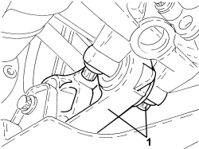
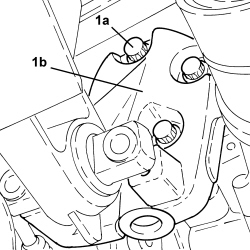

1008C34 BRACKET ON GEARBOX FOR LOWER REACTION ROD - R.R.
- Path
- Procedures > 10 ENGINE > 1008 POWER UNIT SUPPORTS > 1008C POWER UNIT REACTION ELEMENTS > 1008C34 BRACKET ON GEARBOX FOR LOWER REACTION ROD - R.R.
- Kind
- repair procedure (removal / refitting; the operation number is the code)
- Applies to
- engines: 3.2 JTS; all production periods
- Interactive page
- https://sloeber94.github.io/elrnDB-aBrrSpdr/en/#/946001807
Applies to: engines: 3.2 JTS; all production periods
 Removing
Removing
 Refitting
RefittingOp. 7055B54 UNDER ENGINE PROTECTION/GUARD - R.R.
1. Undo the bolts securing the lower reaction rod to the bracket on the gearbox.

Applies to: engines: 3.2 JTS; all production periods
1. Undo the bolts (1a) and remove the bracket on the gearbox (1b).

Applies to: engines: 3.2 JTS; all production periods
Refitting
Removing- Place the bracket in its housing on the gearbox and fasten it tightening the bolts to the recommended torque.
Component | Fastening | dia | Value (daNm) | Validity |
|---|---|---|---|---|
Bracket on gearbox for gearbox side lower reaction rod | Bolt | M12 | 5.4 ÷ 6.6 |
- Tighten the bolts securing the lower reaction rod to the bracket on the gearbox to the recommended torque.
Component | Fastening | dia | Value (daNm) | Validity |
|---|---|---|---|---|
Gearbox side lower reaction rod to gearbox | Bolt | M10 | 5.4 ÷ 6.6 |